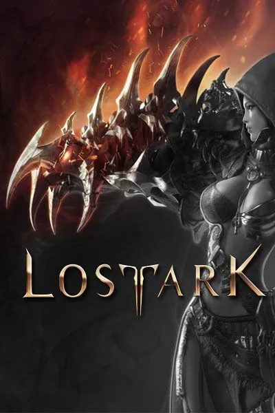

Lost Ark

Gratuit
Date de sortie : 11 février 2022
Développeur : Tripod Studio & Smilegate RPG
Genre : MMORPG
Aperçu :

Description :
Embarquez-vous dans une odyssée en quête de l'Arche perdue dans un monde vaste et dynamique : explorez de nouvelles terres, cherchez des trésors perdus et relevez le défi de combats trépidants dans ce RPG free-to-play bourré d'action.
Acheter sur Steam
Note :
Les notes ici sont attribuées à Lost Ark par les sites web spécialisés dans la critique de jeux vidéos les plus influentes.
Les sites web en question sont mis en évidences ci-dessous :